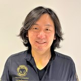

K2 役員
宮澤広人 先生

経歴CAREER
- 1994東北歯科専門学校 卒業
- 1999Kuwata College シニアコース
- 2000Kuwata College コンプリートコース
- 2006MDL 設立
- 2014にしむら塾 東京7期
- 2019川島セミナー キャストパーシャル Co-Cr コース
- 2021下顎吸着義歯セミナー SEMCD 6期
- 2021中野道場 キャストパーシャルセミナー
- 2023BPS Esthetic denture アドバンスコース 8期
- 2025Sequential Wax-up Course
役職・所属学会AFFILIATIONS
役職
- K2 役員
- Kuwata College インストラクター
所属学会
- 日本顎咬合学会（認定歯科技工士）
著書・講演・受賞などACTIVITIES
- 資格：BPS Esthetic denture Technical license、PSD 補綴構造設計士
MDLについてCLINIC
MDLは、TEAM東京の技工部門であるTTDLグループ（TT Dental Labo）の一員として、クラウンブリッジと咬合を担当する歯科技工所。
- クラウンブリッジ・義歯のどちらにも対応
- 桑田正博氏が提唱するFDOの理論を用いた咬合づくり